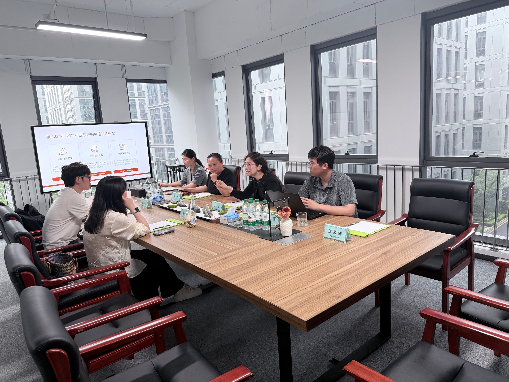

2026年5月20日，浙江大数据交易中心（以下简称"浙数所"）领导一行莅临交流指导，并向后日资本核心合伙人、临平数协会长王慧女士颁发"数据要素·行业专家"聘书。这一权威授证，不仅是对王慧会长个人深耕数据要素领域十余年的专业肯定，更标志着后日资本"产业金融驱动数据价值释放"的投资理念获得行业主流机构的深度认同。
会上，双方围绕数据要素市场化建设、产业数商培育、跨区域生态协同等议题展开深入研讨。王慧会长详细介绍了以"后日资本（产业金融）+ 雾透科技（技术服务）+ 临平数协（生态平台）"三位一体的协同业务体系，并阐述了以金融思维驱动数据从"资源"走向"资产"再到"资本"的完整逻辑闭环。
作为国内最早提出"金融思维+资本视角"审视数据要素的实践者，王慧会长在座谈会上指出：数据从信息到资产的跃迁，中间必须注入金融基因。纯粹的技术概念无法完成数据价值的最终释放——从数据资产入表、到ABS产品设计、到信托结构规划、再到跨境资本通路，每一个环节都需要金融与资本的专业判断。
后日资本在这一链条中承担着价值发现者的核心角色。依托过往多年投行基金机构网络与产业金融资源，后日资本为数据资产找到精准的定价锚点与流通通路。从青岛数据资产ABS的多期成功发行，到杭州银行数据资产质押授信的实质推进，后日资本团队始终走在数据资本化的实践前沿。

「王慧会长凭借十余年产业金融与资本运作经验，创新性提出"金融思维驱动数据价值释放"核心理念，带领团队探索出一条"官方背书+民间活力"双轮驱动的产业数据发展路径。」
——浙数所领导授证评语
此次受聘为浙数所"数据要素·行业专家"，意味着后日资本在数据资产投融资领域的专业能力获得省级权威交易平台的正式背书。双方在会上达成四大合作方向：
- 数商培育协同：发挥后日资本在金融资源、投行网络方面的优势，为优质数商企业提供资质申报、融资对接、上市辅导等全周期资本服务。
- 产业闭环共建：联合浙数所围绕重点垂类产业，打造"数据产品开发→交易所登记→资本化退出"的产业闭环，让数据资产真正在市场上产生流动性溢价。
- 标准联合研究：参与数据资产化相关标准制定，特别是在数据资产评估、质押融资、ABS结构化设计等领域贡献金融专业力量。
- 跨境通路探索：依托后日资本的香港及国际金融通路，为数据资产跨境流动与资本化合规通路提前布局。
数据要素的市场化配置，真正决定价值的不是技术有多先进，而是资本有多懂产业。后日资本始终坚信：每一个数据资产的背后，必有一个产业场景等待激活；每一笔数据资本的交易，必有一条金融逻辑支撑定价。
以此次王慧会长受聘"数据要素行业专家"为新起点，后日资本将持续深耕"产业金融+数据资产"的交叉地带，以更专业的资本视角、更丰富的金融工具、更广泛的投资网络，助推数据要素从资源走向资产、从资产走向资本，为数字经济的价值发现贡献力量。